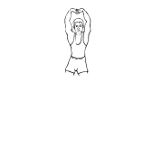

-
images/art1.gif
Doble las rodillas y junte las plantas de sus pies. Esta posición estirará la ingle.Manténgala por 60 segundos.

-
images/art2.gif
Entrelace las manos o detrás de la cabeza. Muy despacio, eleve la cabeza con los brazos y adelante los hombros y el cuello. Manténgase así por 5 segundos, repítalo 3 veces o hasta que sienta un estiramiento suave en la región de la nuca.
-
images/art3.gif
Con las rodillas dobladas empuje los hombros hacia atrás para crear tensión en la parte de arriba de la espalda. Mantenga la tensión controlada por 4-5 segundos. Relaje y mueva la cabeza hacia adelante como se demuestra en el estiramiento#2. Este ejercicio aliviará la tensión y permitirá estirar el cuello..
-
images/art4.gif
Con la cabeza en el suelo extienda un brazo con la palma de la mano hacia arriba y mantenga el otro brazo paralelo al cuerpo (con la palma hacia abajo). Extiéndase en direcciones opuestas al mismo tiempo para crear un estiramiento controlado en los hombros y en la espalda. Manténgalo por 8-10 segundos. Repita el estiramiento por ambos lados por lo menos 2 veces. Mantenga la parte baja de la espalda relajada y en el suelo.
-
images/art5.gif
Coloque la pierna izquierda sobre la derecha.Doble una rodilla en un ángulo de 90 grados y entrelace las manos por detrás de la cabeza. Empuje con la pierna izquierda hasta llevar la pierna derecha al suelo y sienta un estiramiento en la parte inferior de su espalda y en el lado de la cadera. Estírese dentro de sus límites y relájese. Mantenga la espalda, los hombros y los codos planos sobre el suelo. Manténgalo por 30 seg. y repítalo en el otro lado.
-
images/art6.gif
Ponga rectas ambas piernas y relájese. Debe intentar mantener su cabeza en el suelo durante este estiramiento. Coloque su mano en el doblez de la pierna y lleve la hasta el pecho. Mantenga un estiramiento suave por 30 segundos. Repita este ejercicio con la pierna opuesta.
-
images/art7.gif
Doble la pierna izquierda en un ángulo de 90Þ y elévela sobre la pierna derecha (la cual debe estar totalmente estirada). Mantenga la cabeza y los omóplatos planos en el suelo.Vuelva la cabeza hacia el lado izquierdo, coloque su mano un poco mas arriba de la rodilla y apreté la pierna doblada hacia el suelo, manteniendo el control muscular en la parte inferior de la espalda y las nalgas. Repítalo en el otro lado y manténgalo por 30 segundos.
-
images/art8.gif
Cómodamente, coloque los brazos por encima de la cabeza y estire lo más que pueda las piernas y los dedos. Manténgalo por 5 segundos y relájese. Este es un buen estiramiento para los músculos del cuerpo entero.
-
images/art9.gif
Junte las plantas de sus pies y manténgalas unidas con sus manos. Junte los dedos de los pies y adopte una postura cómoda de la región de la ingle. Doblese despacio hacia adelante hasta sentir un estiramiento placentero en la región de la ingle. Trate de mantener los codos en la parte exterior de las piernas, para guardar una posición estable y equilibrada. Manténgalo por 30-40 seg.
-
images/art10.gif
Siéntese, doble la pierna izquierda sobre la derecha, ponga el pie izq. en la parte exterior del muslo derecho y coloque el codo en la parte exterior del muslo izq. (justamente encima de la rodilla). Doble el torso y mueva la cabeza despacio para mirar sobre el hombro izquierdo. Este estiramiento lo ayudará a estirar las caderas y la parte interior de la espalda.

-
images/art11.gif
Para estirar la parte superior de los tendones de las corvas y de la cabeza, doble la rodilla, sosténgala con sus brazos. Suavemente, eleve la pierna hacia el pecho hasta que sienta un estiramiento en la parte posterior de la pierna. Debe estirarse descansando la espalda en algún punto de apoyo. Manténgalo por 30 seg. Asegúrese de apretar la pierna hacia el pecho como una unidad, para no torcer la rodilla.
-
images/art12.gif
Siéntese con las piernas dobladas y coloque el talón derecho a nivel de la cadera. Mientras, coloque la planta del pie izquierdo, tocando la parte interior del muslo derecho. Ahora, muy despacio inclínese hacia atrás hasta que sienta un estiramiento suave en los cuadriceps. Use las manos para equilibrio y apoyo. Manténgalo por 30 segundos.
-
images/art13.gif
Contraiga los músculos de los glúteos del lado de la pierna doblada mientras adelanta la cadera. Este ejercicio le ayudará a estirar el frente de la cadera y la parte superior del muslo. Mantenga los glúteos contraídos por 5-8 seg., relájelos y siga estirando el cuadriceps aun mas por 15 segundos.
-
images/art20.gif
Ponga la pierna derecha con la planta del pie izquierdo tocando escasamente la parte interior del muslo derecho. Dóblese hacia adelante y estire los tendones de las corvas. Busque lograr un estiramiento suave y relájese. Si no puede llegar fácilmente al pie, use una toalla para ayudarle a estirarse. Mantenga por 50 segundos.
-
images/art21.gif
Como indica la figura, coloque una pierna hacia adelante hasta que sienta un estiramiento suave en el frente de la cadera, en el tendón de la corva y en la ingle. Estírese sin cambiar las posiciones de las rodillas. Manténgalo 30 segundos.
-
images/art22.gif
Siéntese en cuclillas formando un ángulo de 15Þ con los talones planos y las rodillas dobladas. Puede usar una valla o un poste para sostenerse con las manos si le parece difícil.Es un buen estiramiento para los tobillos y el tendón de Aquiles, la ingle, las caderas y la parte inferior de la espalda.Manténgalo por 30 segundos.
-
images/art23.gif
Colóquese de pie a poca distancia de un punto de apoyo sólido y descanse en él con los antebrazos, poniendo la cabeza sobre las manos. Doble una pierna y coloque el pie frente a usted mientras estira la otra hacia atrás. Mueva despacio las caderas hacia adelante hasta que sienta un estiramiento suave en la pantorrilla de la pierna estirada. Manténgalo por 30 segundos. Estire ambas piernas.
-
images/art24.gif
Para estirar la pantorrilla y el tendón de Aquiles, doble un poco la rodilla de atrás, con el talón abajo.Este ejercicio es excelente para desarrollar la flexibilidad de los tobillos.Manténgalo por 15 seg. en cada pierna.
-
images/art25.gif
Agarre el pie izquierdo con la mano derecha y hale suavemente moviendo el talón hasta las nalgas. En esta posición la rodilla se dobla en un ángulo natural y crea un estiramiento beneficial en las rodillas.Manténgalo por 30 seg. y repita el ejercicio en ambas piernas.
-
images/art26.gif
Levante los hombros hasta las orejas hasta que sienta una ligera tensión en el cuello y hombros. Mantenga lo por 30 seg. Relaje los hombros hasta llegar a su posición normal. Repita lo 2-3 veces.

-
images/art27.gif
Mueva la barbilla hacia el hombro izquierdo para crear un estiramiento del lado derecho del cuello. Mantenga por 10-20 seg. Repita cada lado 2 veces.
-
images/art28.gif
Entrelace los dedos de ambas manos y estire sus brazos sobre la cabeza con las palmas hacia arriba. Sienta el estiramiento en los brazos, los hombros y la parte superior de la espalda. Manténgalo por 15 seg. No corte la respiración.
 -
images/art29.gif
De pie con las rodillas un poco flexionadas, tire el codo suavemente por detrás de la cabeza y dóblese hacia el mismo lado.Manténgalo por unos 10 segundos. Hágalo con ambos lados.
-
images/art30.gif
Parado con las rodillas un poco dobladas, ponga la palma de las manos con los dedos hacia abajo en la parte baja de la espalda (justo arriba de las caderas). Suavemente empuje sus manos y mantenga una presión cómoda por 10-12 seg.
-
images/art31.gif
Con los dedos entrelazados detrás de la espalda, voltee los codos hacia adentro, mientras endereza los brazos. Mantenga por 5-15 seg. repita 2 veces
-
images/art32.gif
Coloque ambas manos separadas por la misma distancia en una repisa y deje caer la parte superior del cuerpo hacia abajo. Las caderas deben estar directamente sobre los pies. Doble un poco las rodillas y mueva las manos a diferentes alturas.Mantenga por 30 seg.
-
images/art33.gif
Con los dedos pulgares de masajes en el arco longitudinal de sus pies. Haga movimientos circulares para aflojar los tejidos. Durante 2-3 minutos en cada pie. Eleve los pies. Mantenga plana la parte inferior de la espalda y no la despegue del suelo. Aumente la duración de elevación poco a poco.